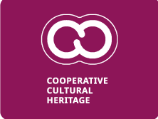
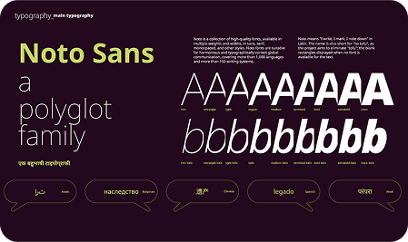
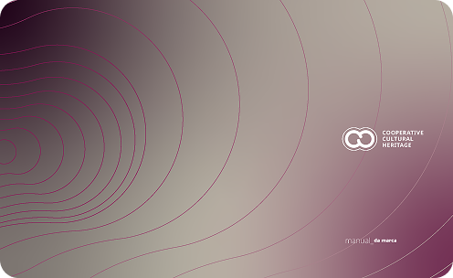

The Cooperative Cultural Heritage identity draws inspiration from the concept of the link—a symbol that conveys unity, reciprocity, and continuity. Its expanding cycles represent the circulation of cooperative ideas among individuals and communities, reinforcing networks of trust and solidarity. By identifying tangible and intangible heritage, the initiative honors the stories, knowledge, and practices that sustain collective life and foster new forms of connection. The seal and plaque make this recognition visible within communities, strengthening both the sense of belonging and the commitment to shared responsibility.

Noto is a collection of high-quality fonts, available in multiple weights and widths, in sans, serif, monospaced, and other styles. Noto fonts are suitable for harmonious and typographically correct global communication, covering more than 1,000 languages and more than 150 writing systems. Noto means "I write, I mark, I note down" in Latin. The name is also short for "no tofu", as the project aims to eliminate "tofu": the blank rectangles displayed when no font is available for the text.

Our brandbook gathers the essential guidelines for using the Cooperative Cultural Heritage visual identity. It ensures coherence across all materials — digital or printed — and preserves the integrity of our brand.